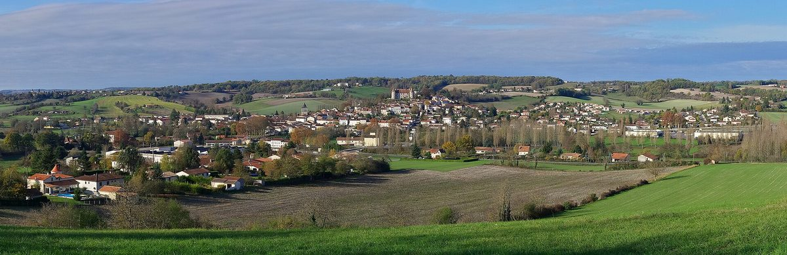

프랑스 라발레트-튀드-드론 군연합, 공공수영장 지붕 태양광 운영할 공공서비스 회계 따로 세워…33만8,000유로 들여 해마다 1만7,000유로 절감 기대

본예산이 같은 금액을 빌려주고 운영 흑자로 약 11년에 걸쳐 갚는 구조…전기는 팔지 않고 수영장 물 데우기 등에 자체 소비, 11월 공사 시작
프랑스 누벨아키텐 샤랑트주의 라발레트-튀드-드론 군연합(communauté de communes Lavalette-Tude-Dronne)이 몽모로(Montmoreau) 공공수영장과 행정 민원 창구 '프랑스 서비스' 건물에 들어설 태양광을 운영하려고 '재생에너지'라는 이름의 상공업 공공서비스(SPIC)를 새로 만들었다. 군연합 의회가 22일 의결한 이 조직은 본예산에 딸리되 독립 회계와 별도 예산, 자체 국고 계좌를 갖게 되며, 태양광 공사는 11월 시작한다. 초기 투자비 33만8,000유로(부가세 포함)는 본예산이 되갚는 조건의 선급금으로 같은 금액을 넣어 마련하고, 이 가운데 18만 유로는 투자 적립금에서 꺼낸다. 군연합은 해마다 약 1만7,000유로의 에너지비를 아끼고 유지·세금·보험 같은 운영비는 연 약 3,472유로가 들 것으로 보며, 크리스틴 라브루스(Christine Labrousse) 재정 담당 부의장은 운영 흑자로 선급금을 다 갚는 데 약 11년이 걸린다고 설명했다. 생산한 전기는 팔지 않고 군연합 건물과 수영장 물 데우기에만 쓰기 때문에 이 회계는 부가세 대상이 아니며, 프랑스 환경에너지관리청(ADEME)의 보조금 10만 유로도 2027년에 받을 것으로 기대하고 있다. 장이브 앙보(Jean-Yves Ambaud) 의장은 감가상각을 따져도 사업이 경제적으로 타당하다고 평가하면서, 관내 시·읍과 집단 자가소비(autoconsommation collective) 사업을 하게 되면 사정이 달라질 수 있다고 덧붙였다.
시민에너지 관점
33만8,000유로를 들여 해마다 1만7,000유로를 아끼고 약 11년이면 본예산에서 빌린 돈을 다 갚는 계산은, 공공건물 지붕 태양광이 지자체 살림을 지키는 투자가 될 수 있음을 보여 준다. 지자체가 발전 사업을 하면 돈의 흐름이 흐려진다는 우려가 나올 수 있지만, 이 군연합은 별도 예산과 별도 계좌를 가진 공공서비스 회계를 따로 세워 투자와 상환을 눈에 보이게 했다. 이 회계가 앞으로 다른 태양광과 관내 시·읍의 집단 자가소비 사업까지 맡을 수 있게 열어 둔 것은, 공공 지붕에서 시작한 전기가 이웃 공동체로 나뉘는 길을 미리 낸 것으로 보인다. 국내 지자체도 수영장·체육관·청사 지붕 태양광을 별도 회계로 묶고, 그 전기를 주민과 함께 쓰는 공동체 자가소비까지 내다보고 설계해야 한다.
출처: Charente Libre 2026-10-23 Jean-Marc Coiffard 원문 보기
仏ラヴァレット＝テュード＝ドローヌ広域共同体、公営プール屋根の太陽光を運営する公共サービス会計を別に設置…33万8,000ユーロ投じ年1万7,000ユーロ節約見込み
本予算が同額を貸し付け、運営黒字で約11年かけて返済する仕組み…電気は売らずプールの給湯などに自家消費、11月着工
フランス・ヌーヴェル＝アキテーヌ地域圏シャラント県のラヴァレット＝テュード＝ドローヌ広域共同体（communauté de communes Lavalette-Tude-Dronne）は、モンモロー（Montmoreau）の公営プールと行政窓口「フランス・サービス」の建物に設ける太陽光発電を運営するため、「再生可能エネルギー」という名の商工業的公共サービス（SPIC）を新設した。共同体議会が22日に議決したこの組織は、本予算に付属しながら独立した会計と別予算、独自の国庫口座を持ち、太陽光の工事は11月に始まる。初期投資33万8,000ユーロ（付加価値税込み）は、本予算が返済条件付きの前払金として同額を入れてまかない、そのうち18万ユーロは投資積立金から取り崩す。共同体は年約1万7,000ユーロのエネルギー費を節約でき、維持・税・保険などの運営費は年約3,472ユーロかかると見込んでいる。財政担当のクリスティーヌ・ラブルース（Christine Labrousse）副議長は、運営黒字で前払金を全額返すのに約11年かかると説明した。発電した電気は売らず、共同体の建物とプールの給湯にのみ使うため、この会計は付加価値税の対象にならない。フランス環境・エネルギー管理庁（ADEME）の補助金10万ユーロも2027年に見込んでいる。ジャン＝イヴ・アンボー（Jean-Yves Ambaud）議長は、減価償却を考慮しても事業は経済的に成り立つと評価し、域内の市町村と集団自家消費（autoconsommation collective）事業を行うことになれば状況は変わりうると付け加えた。
市民エネルギーの視点
33万8,000ユーロを投じて年1万7,000ユーロを節約し、約11年で本予算からの借入を返し終えるという計算は、公共建物の屋根の太陽光が自治体の財政を守る投資になりうることを示している。自治体が発電事業を行うとお金の流れが不透明になるという懸念もありうるが、この広域共同体は別予算・別口座を持つ公共サービス会計を独立させ、投資と返済を見える形にした。この会計が今後ほかの太陽光や域内市町村の集団自家消費事業まで担えるよう道を開いておいたことは、公共の屋根から始まった電気を近隣のコミュニティと分け合う道をあらかじめ用意したものとみられる。韓国の自治体も、プール・体育館・庁舎の屋根の太陽光を別会計にまとめ、その電気を住民と共に使うコミュニティ自家消費まで見据えて設計すべきだ。
出典: Charente Libre 2026-10-23 Jean-Marc Coiffard 原文を読む
法国拉瓦莱特-蒂德-德罗讷市镇联合体为公共游泳馆屋顶光伏单独设立公共服务账户…投资33.8万欧元预计每年节省1.7万欧元
由主预算借出同等金额、以运营盈余约11年还清…所发电力不出售，自用于游泳馆加热池水等，11月开工
法国新阿基坦大区夏朗德省的拉瓦莱特-蒂德-德罗讷市镇联合体（communauté de communes Lavalette-Tude-Dronne）为运营蒙莫罗（Montmoreau）公共游泳馆和政务服务窗口“法国服务”大楼上的光伏设施，新设了名为“可再生能源”的工商业性公共服务机构（SPIC）。该机构经联合体议会22日表决通过，隶属于主预算，但拥有独立核算、单独预算和自己的国库账户；光伏工程将于11月开工。33.8万欧元（含增值税）的初期投资，由主预算以须偿还的预付款形式拨入同等金额，其中18万欧元从投资储备金中支出。联合体预计每年可节省约1.7万欧元能源费用，维护、税费和保险等运营费用每年约3,472欧元；负责财务的副主席Christine Labrousse表示，用运营盈余还清这笔预付款大约需要11年。所发电力不对外出售，只供联合体的建筑和游泳馆加热池水使用，因此该账户无需缴纳增值税；联合体还期待在2027年获得法国生态转型署（ADEME）10万欧元的补助。主席Jean-Yves Ambaud认为，即使计入折旧，项目在经济上也是可行的，并补充说，如果今后与辖区内各市镇开展集体自发自用（autoconsommation collective）项目，情况可能会有所变化。
市民能源视角
投资33.8万欧元、每年节省1.7万欧元、约11年还清从主预算借来的钱，这笔账说明公共建筑屋顶光伏可以成为守护地方财政的投资。有人会担心地方政府做发电项目会让资金流向不清，但这个市镇联合体单独设立了拥有独立预算和账户的公共服务账户，让投资和偿还一目了然。该账户还为今后承接其他光伏项目和辖区市镇的集体自发自用项目留出了空间，看来是提前铺好了让公共屋顶上的电力与周边社区共享的道路。韩国地方政府也应把游泳馆、体育馆、政府大楼屋顶光伏纳入单独账户，并在设计时就考虑与居民共同使用电力的社区自发自用。
来源: Charente Libre 2026-10-23 Jean-Marc Coiffard 查看原文
France's Lavalette-Tude-Dronne sets up a separate public service account to run solar on a public swimming pool roof, investing 338,000 euros to save an expected 17,000 euros a year
The main budget advances the same amount, to be repaid from operating surpluses over about 11 years; the power is not sold but used on site, including for heating pool water, with work starting in November
The Lavalette-Tude-Dronne community of communes (communauté de communes) in Charente, in France's Nouvelle-Aquitaine region, has created an industrial and commercial public service (SPIC) called "Renewable Energies" to run the solar panels to be installed on the public swimming pool and the France Services government help-desk building in Montmoreau. Approved by the community council on October 22, the body is attached to the main budget but has its own accounts, a separate budget and its own Treasury account, and installation work begins in November. The initial investment of 338,000 euros including VAT will be covered by a repayable advance of the same amount from the main budget, 180,000 euros of which will come from the investment reserve. The community expects to save about 17,000 euros a year on energy, against operating costs for maintenance, taxes and insurance of about 3,472 euros a year, and Christine Labrousse, the vice-president for finance, said it would take about 11 years to repay the advance in full from operating surpluses. Because the electricity is not sold but used only for the community's buildings and to heat the pool water, the account is not subject to VAT, and the community also hopes to receive a 100,000-euro grant from the French ecological transition agency ADEME in 2027. President Jean-Yves Ambaud said the project is economically viable even after depreciation, adding that this could change if the community launches a collective self-consumption (autoconsommation collective) project with its member communes.
Citizen Energy View
Spending 338,000 euros to save 17,000 euros a year and repaying the main budget within about 11 years shows that solar on public building roofs can be an investment that protects local finances. Some may worry that power generation by a local authority muddies the money trail, but this community set up a public service account with its own budget and bank account, making both the investment and the repayment visible. By leaving the door open for the account to take on other solar projects and collective self-consumption with member communes, it appears to have prepared a path for power from public roofs to be shared with neighbouring communities. Korean local governments, too, should group solar on pools, gyms and council buildings into separate accounts and design them from the start with community self-consumption shared with residents in mind.
Source: Charente Libre 2026-10-23 Jean-Marc Coiffard Read the original